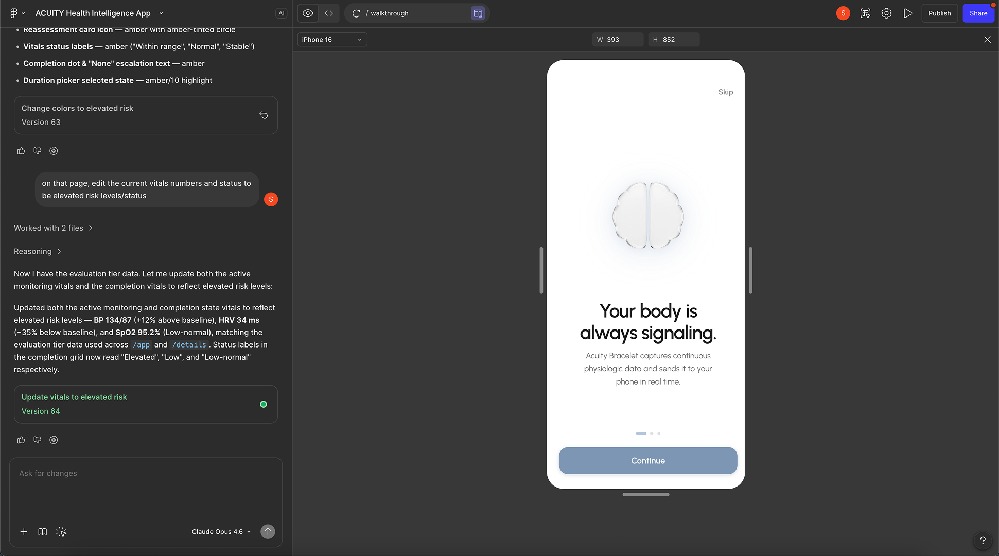
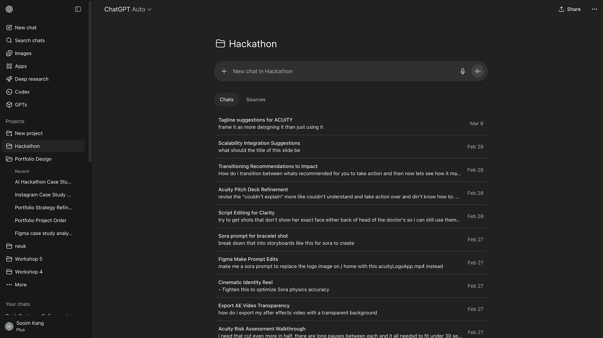

Health wearable + app · Parsons AI Startup Design Hackathon · 2026
Acuity is a conceptual AI-powered health monitoring ecosystem that connects a wearable bracelet with a mobile app to help people interpret physiological signals, understand changes in urgency, and navigate their next steps. Designed in a 24-hour hackathon.
Overview
The most dangerous moment in healthcare isn’t the emergency. It’s the uncertainty before it.
The setting
A 24-hour AI startup hackathon at Parsons.
Teams from Parsons and the University of Arizona had one day to define a problem, build a product, and pitch it to judges from Snap, IDEO, and Microsoft. I designed and built the app; Kritika led research and Lucy led the brand and deck.
View the Designpreneurs Hackathon announcement on Instagram ↗


The problem
Half of people feel the warning signs. Only one in five act.
Wearables already track heart rate and blood pressure, then leave the meaning to you. So people guess, and wait.
They feel it coming
Half of people feel warning signs before cardiac arrest. Only 20% act. Marijon et al., 2016
Risk is uneven
Underserved communities carry 31% higher cardiovascular risk, and most cases go undetected. American College of Cardiology, 2024
Knowing when is hard
9 in 10 adults lack the health literacy to know when to seek care. CDC, 2024
How might we
How might we help people know when something is wrong, and act before it’s too late?
Solution
A bracelet that senses, a gesture that answers, a phone that guides.
Acuity learns your normal and sorts any sustained change into one of three levels: Stable, Elevated, or Emergent. Each comes with one next step, and you confirm every action.
It senses
A seamless bracelet reads your vitals around the clock and buzzes when something changes.
You respond
A pinch, a held pinch, or a wave answers the alert without opening an app.
It guides
The phone shows one state, why it changed, and one next step.
Core experience
Set up once. Then Acuity watches, and you respond.
Every flow is recorded from the working prototype.
Set up
Onboarding asks once, then calibrates for 14 days.
Account, health history, and an emergency contact, then Acuity learns your personal baseline.
Monitor
Three levels, three plans.
Every level explains itself with “View details.” Elevated and Emergent add a care plan. These levels and responses are proposed design logic, not clinically validated triage.
Stable
“View details” explains why you’re within range. No plan needed.
Elevated
Schedule an appointment soon, call a ride to your medical center, or keep monitoring.
Emergent
A ride to the nearest ER, a ride to your saved center, or a contact notified to take you.
Respond
Answer from the wrist, without unlocking a phone.
Buzz
Two pulses: something changed.
Pinch
Opens the care plan on your phone.
Hold the pinch
Not ready? Starts a monitoring window.
Wave
Dismisses it. Acuity keeps watching.
Keep watching
Not ready to act? Watch closely instead.
Holding the pinch, or choosing “Continue monitoring,” starts a 24, 48, or 72-hour window. Acuity reassesses when it ends.
Track
Between alerts, see the trend.
Eight weeks of trends against your baseline, a history of escalations, and a report for your doctor.
Research
People don’t lack data. They lack a clear signal to act.
Market
Wearables are booming. The people most at risk still wait.
The market is set to more than double by 2030, yet cost keeps high-risk people from care.
Wearables are going mainstream
From $70.3B in 2024 to a projected $176.8B by 2030, about 15.9% a year.
Care is hard to afford
28% of adults struggled to pay for care last year, rising to 40% of 18–29s and 41% of Hispanic adults.
36%
So people wait
36% of uninsured adults skipped or postponed care they needed because of the cost.
Landscape
Wearables measure. Care services wait. No one sits in between.
Apple Watch, Oura, and WHOOP track continuously but leave the meaning to you. Telehealth and 911 guide action only once you’ve decided something is wrong.
Interviews
The barrier wasn’t data. It was doubt.
Every story described the same moment: feeling something, then explaining it away. One was personal: Kritika’s grandmother had jaw pain and nausea, was told to rest, and was gone within hours.
Persona
Maya isn’t negligent. She’s uncertain.
We designed for adults managing hypertension who delay care. Her journey is the design scenario Acuity is built around.

Maya, 42
The hesitant high-risk adult
“It’s probably just stress.”
Profile
- 42, works long hours
- Diagnosed with hypertension 3 years ago
- High-deductible insurance plan
Behaviors
- Takes her medication inconsistently
- Feels occasional chest tightness
- Tells herself it’s probably just stress
Fears
- A $3,000 ER bill
- Overreacting, or feeling dramatic
- Inconveniencing anyone
Needs
- To know when it’s serious
- Guidance she can act on fast
- Not to navigate care alone
Days 1–14
Baseline
Acuity learns her resting heart rate, HRV, blood pressure, and sleep. No alerts.
Days 15–19
Drift
Blood pressure trends 18% above baseline, HRV declines, sleep fragments. Not alarming alone.
Day 19
Alert
Two buzzes. A pinch opens an Elevated care plan: evaluation advised within 24 hours.
Day 19
Action
She books the appointment instead of waiting it out.
Business model
Insurers pay, so the people most at risk pay nothing.
An insurer-funded, per-member model reaches high-risk members at no cost to them. Fewer avoidable admissions pays for it.
Insurer-funded SaaS
A PMPM model: zero cost to the user, aimed at high-risk members.
It pays for itself
For 50K high-risk members, $4.8M a year saves a projected $6M.
2–5x
Return on investment
Fewer admissions
Projected: about 100 admissions prevented, a 1–2% drop overall.
Design decisions
Four choices that shape the system.
01
Why blood pressure, heart rate, and sleep?
Decision
Read each against the person’s own baseline, not a population average.
Why
Early strain shows as a trend across signals. All three can be sensed at the wrist.
Tradeoff
Cuffless wrist blood pressure needs cuff calibration and supports trends, not diagnosis.
Blood pressure
A trend against your own baseline, estimated cuffless from pulse timing.
Heart rate and HRV
Optical and electrical sensing; falling HRV is an early sign of strain.
Sleep
Continuity from motion and heart signals; disrupted sleep often travels with cardiac stress.
02
Why three urgency levels?
Decision
Collapse every reading into Stable, Elevated, or Emergent, each with one next step.
Why
A yes/no alert either cries wolf or stays silent. A middle level can say “watch this.”
Tradeoff
Any tier can be wrong. Thresholds need clinical validation, and Stable never says “you’re fine.”
03
Why AI?
Decision
Use AI to model your baseline and judge whether small changes add up, not to show more data.
Why
Static thresholds ignore what’s normal for you. Continuous data predicts risk earlier.
Tradeoff
Models can be wrong, so care options stay rule-based and nothing happens without you.
Deterministic
- Which actions each level offers
- Emergency contact and saved centers
- Monitoring windows: 24, 48, 72 hours
AI-generated
- Your personal baseline
- Sustained-drift detection
- The urgency level and its summary
Your control
- Confirming every action
- Choosing to keep monitoring
- Logging symptoms, dismissing alerts
04
Why wrist gestures?
Decision
Haptics announce a change; a pinch, hold, or wave answers it.
Why
When you feel unwell, unlocking a phone and navigating an app is the last thing you want.
Tradeoff
Gestures must be learned and can misfire, so every action also works on the phone.
System architecture
How hardware, AI, and software connect.
Signals flow one way. The bracelet and your context feed a model of your normal; the model turns sustained change into one urgency level; the app turns that level into a plan.
Explaining the model
The app shows its reasoning.
Settings explains, in plain language, how Acuity learns your baseline and decides when to escalate.
Validation & limitations
A connected experience, demonstrated. Clinical reliability, untested.
What we demonstrated
A working prototype, a product film, and a pitch in 24 hours.
Acuity was named one of the event’s standout concepts. We did not test it with patients or clinicians.

Midjourney
Explored the bracelet’s form before anything was modeled.

Sora
Generated the scenes for our product film.

Figma Make
Where I built and iterated the app prototype.

ChatGPT
Shaped the narrative, script, and prompts for the other tools.
What remains open
Questions a real health product must answer first.
Cuffless wrist blood pressure needs cuff calibration and drifts, and we never tested real sensors. The tier thresholds are design logic, so false alarms and missed alerts would need clinical study. Gestures need alternatives for limited mobility or sensation, and health-data consent and escalation liability remain open.
What we’d do next
Validate the signal before polishing the screens.
Test wrist readings against cuff and ECG with clinicians, stress-test the tier thresholds for false alarms and missed alerts, then usability-test the levels and gestures with high-risk adults.
Reflection
Designing for health takes more than clear data. It takes earned trust.
The hard part wasn’t visualizing data. It was communicating uncertainty, choosing what to show first, and keeping the person in charge.


Takeaway · Health behavior
People don’t act on data. They act on clarity they can trust.
Takeaway · Designing with AI
When AI makes production cheap, judgment becomes the job.